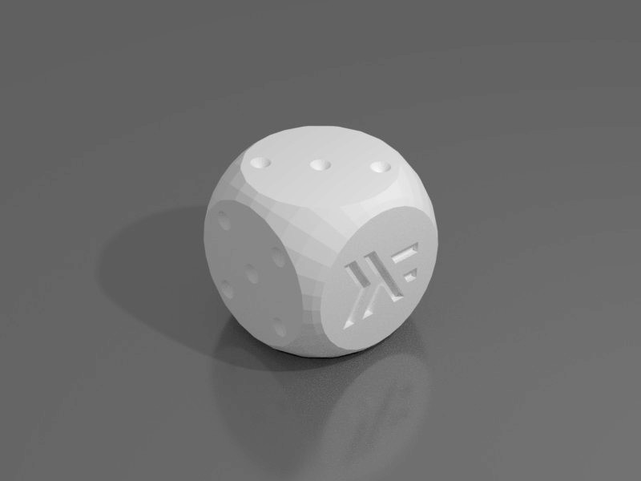

CSG Based CAD* in Haskell
The Other kind of Object Oriented programming
*code that builds physical objects
Background

OpenScad

OpenScad

OpenScad?
- Geometry isn't first-class/introspectable
- No Data Structures
- No Higher Order Functions
- No Namespaces
- Unintuitive Syntax/Scoping Rules
- Unhelpful Memorization * Matt Adereth :: clojure.core/typing :: https://www.youtube.com/watch?v=uk3A41U0iO4
Why Haskell?
What goes into a CSG implementation?
Practical Algorithms for 3D Computer Graphics
2nd Edition, 2013, (Ferguson), Page 419
csg.js, (Github)
3D Objects

3D Objects

type Vector = (Double, Double, Double)
3D Objects

3D Objects

type Vector = (Double, Double, Double) type Polygon = [Vector] type Solid = [Polygon]
3D Objects

type Vector = (Double, Double, Double) type Triangle = (Vector, Vector, Vector) type Solid = [Triangle]
3D Objects

flipped :: Tri -> Tri flipped (a, b, c) = (c, b, a)
CSG Algorithm

CSG Algorithm

CSG Algorithm

CSG Algorithm

CSG Algorithm

CSG Algorithm
CSG Algorithm

BSP Trees
“I'm a huge proponent of designing your code around the data, rather than the other way around”
. . .
“Bad programmers worry about the code. Good programmers worry about data structures and their relationships.”
- Linus Torvalds -
CSG Algorithm

CSG Algorithm

CSG Algorithm

CSG Algorithm

CSG Algorithm
data BspTree = BspTree { coplanarTriangles :: [Tri], frontOf :: BspTree, backOf :: BspTree } emptyBspTree :: BspTree emptyBspTree = BspTree [] emptyBspTree emptyBspTree
Test if a point is enclosed:
encloses :: BspTree -> Vector -> Bool encloses (BspTree [] _ _) _ = False encloses tree vertex = (BspTree (t:_) front back) = case vectorSideOfPlane (triToPlane t) v of FRONT -> case front of (BspTree [] _ _) -> False a -> encloses front vertex BACK -> case back of (BspTree [] _ _) -> True a -> encloses back vertex COPLANAR -> case back of (BspTree [] _ _) -> True a -> encloses back vertex
Test if a point is enclosed:

Test if a point is enclosed:

Test if a point is enclosed:

Test if a point is enclosed:

Test if a point is enclosed:

Extending the algorithm to clip triangles

Extending the algorithm to clip triangles

Does it work?
Does it Work?
object :: Csg.BspTree object = (cube `Csg.subtract` cross) `Csg.intersection` sphere where sphere = Csg.unitSphere 32 16 cube = Csg.uniformScale 1.6 Csg.unitCube cylinder = Csg.scale (0.5, 0.5, 3.0) $ Csg.unitCylinder 32 axes = [(1.0, 0.0, 0.0), (0.0, 1.0, 0.0), (0.0, 0.0, 1.0)] cross = foldl1 Csg.union $ map (\a -> Csg.rotate a (pi/2) cylinder) axes
Does it Work?
Does it Work?
dieFaces :: [[[Int]]] dieFaces = [[ [0, 0, 0], [0, 1, 0], [0, 0, 0]], [[1, 0, 0], [0, 0, 0], [0, 0, 1]], [[1, 0, 0], [0, 1, 0], [0, 0, 1]], [[1, 0, 1], [0, 0, 0], [1, 0, 1]], [[1, 0, 1], [0, 1, 0], [1, 0, 1]], [[1, 0, 1], [1, 0, 1], [1, 0, 1]]]
Does it work
object :: Csg.BspTree object = combinedFaces `Csg.intersection` sphere where holeShape = Csg.uniformScale 0.38 $ Csg.unitCone 16 facePatterns = map (reifyFace holeShape) dieFaces translateFaceIntoPlace = Csg.translate (0.0, 0.0, -0.75) . Csg.uniformScale 0.35 positionedPatterns = map (\(r, f) -> r f) $ zip rotations $ map translateFaceIntoPlace facePatterns cube = Csg.uniformScale 1.5 Csg.unitCube combinedFaces = foldl Csg.subtract cube positionedPatterns sphere = Csg.unitSphere 32 16
Does it Work?
Does it Work?
Does it Work?
A Fancy WebUI
Further Work?
- Different types of operations
- 2D CAD + Extrusions
- Convex Hull
- Minkowski Addition
- Produce more efficient geometry
- Performance (maybe just wrap CGAL)
- Experiment with laziness (infinite shapes)
- Experiment with functional types (monoids)
- Unit Testing
Links:
Code:
https://bitbucket.org/joe_warren/csg-haskell
Slides:
https://bitbucket.org/joe_warren/csg-talk